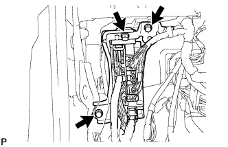
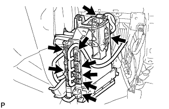
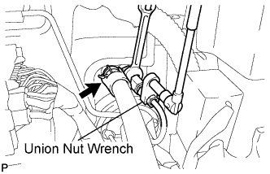
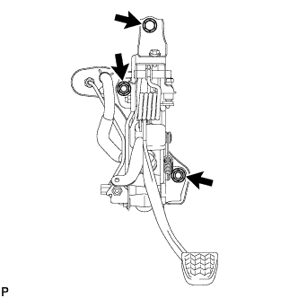
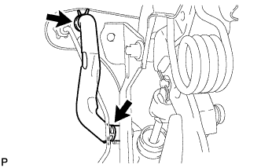
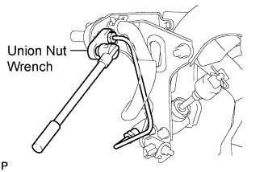
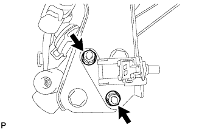
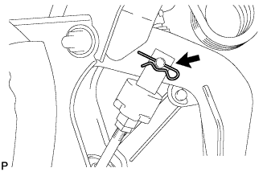
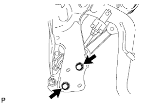

CLUTCH MASTER CYLINDER (for LHD) > REMOVAL |
| 1. DRAIN CLUTCH FLUID |
| 2. REMOVE NO. 2 INSTRUMENT PANEL FINISH PANEL CUSHION |
 |
Place protective tape as shown in the illustration.
Using a moulding remover, detach the 7 claws and remove the panel cushion.
| 3. REMOVE LOWER INSTRUMENT PANEL PAD SUB-ASSEMBLY LH |
 |
Remove the clip.
Remove the screw.
Detach the 8 claws.
Remove the panel pad and disconnect the connectors and 2 clamps.
| 4. REMOVE INSTRUMENT SIDE PANEL LH |
 |
Place protective tape as shown in the illustration.
Using a moulding remover, detach the 6 claws and remove the side panel.
| 5. REMOVE NO. 1 INSTRUMENT CLUSTER FINISH PANEL GARNISH |
 |
Place protective tape as shown in the illustration.
Using a moulding remover, detach the 3 claws and remove the panel garnish.
| 6. REMOVE NO. 2 INSTRUMENT CLUSTER FINISH PANEL GARNISH |
 |
Place protective tape as shown in the illustration.
Using a moulding remover, detach the 2 claws and remove the panel garnish.
| 7. REMOVE FRONT DOOR SCUFF PLATE LH |
 |
Detach the 7 claws and 4 clips, and remove the scuff plate.
| 8. REMOVE NO. 1 INSTRUMENT PANEL UNDER COVER SUB-ASSEMBLY (w/ Floor Under Cover) |
 |
Remove the 2 screws.
Detach the 3 claws.
Remove the under cover and disconnect the connectors.
| 9. REMOVE COWL SIDE TRIM BOARD LH |
 |
Remove the cap nut.
Detach the 2 clips and remove the trim board.
| 10. REMOVE LOWER NO. 1 INSTRUMENT PANEL FINISH PANEL |
 |
Using a screwdriver, detach the 2 claws.
Open the hole cover.
 |
Remove the 2 bolts.
Detach the 14 claws.
 |
Detach the 2 claws and remove the sensor.
 |
Detach the 2 claws and disconnect the 2 control cables.
Remove the finish panel and then disconnect the connectors.
| 11. REMOVE NO. 1 SWITCH HOLE BASE |
 |
Detach the 4 claws.
Remove the switch hole base and then disconnect the connectors.
| 12. REMOVE DRIVER SIDE KNEE AIRBAG ASSEMBLY (w/ Driver Side Knee Airbag) |
 |
Remove the 5 bolts and driver side knee airbag.
Disconnect the connector.
| 13. REMOVE LOWER INSTRUMENT PANEL SUB-ASSEMBLY (w/o Driver Side Knee Airbag) |
 |
Detach the 2 claws and disconnect the DLC3.
Remove the 5 bolts and instrument panel.
| 14. REMOVE MAIN BODY ECU (COWL SIDE JUNCTION BLOCK LH) |
 |
Remove the 3 bolts.
 |
Disconnect the 9 ECU connectors and remove the ECU.
| 15. DISCONNECT CLUTCH MASTER CYLINDER TO FLEXIBLE HOSE TUBE AND CLUTCH RESERVOIR TUBE |
 |
Using a union nut wrench, disconnect the flexible hose tube.
Disconnect the clutch reservoir tube.
| 16. REMOVE CLUTCH PEDAL SUPPORT ASSEMBLY WITH CLUTCH MASTER CYLINDER |
Disconnect the clutch start switch connector.
w/ Cruise Control System:
Disconnect the clutch switch connector.
 |
Remove the 2 nuts, bolt and clutch pedal support with clutch master cylinder.
| 17. REMOVE CLUTCH RESERVOIR HOSE |
 |
Using pliers, grip the claws of the clip, slide the 2 clips and remove the clutch reservoir hose.
| 18. REMOVE CLUTCH MASTER CYLINDER TO WAY TUBE |
 |
Using a union nut wrench, remove the tube.
| 19. REMOVE CLUTCH START SWITCH ASSEMBLY |
 |
Remove the 2 nuts and clutch start switch.
| 20. REMOVE CLUTCH MASTER CYLINDER ASSEMBLY |
 |
Remove the clip, wave washer and clevis pin.
 |
Remove the 2 bolts and clutch master cylinder.